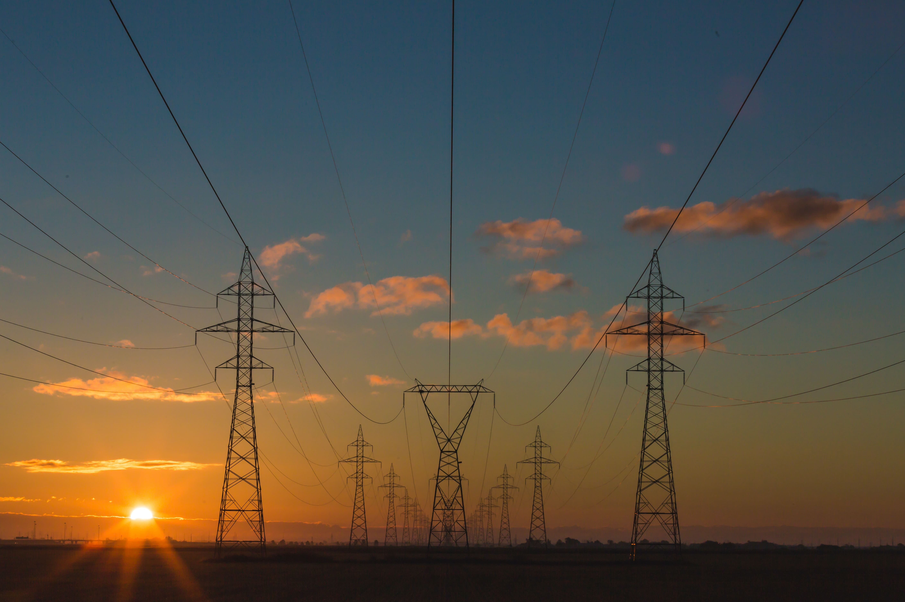

Tentang Teknologi
Teknologi sangat merubah dinamika kehidupan saat ini, Dengan teknologi semua dapat mengakses informasi dengan mudah, menghemat waktu dan pengeluaran, inovasi di berbagai bidang dan komunikasi lebih mudah untuk terhubung dengan orang di seluruh dunia.

Pada tahun 2019 dan 2020 kejahatan cyber meningkat karena semua tergantung dengan
teknologi. Bangsa Indonesia merupakan salah satu bangsa yang hidup dalam lingkungan
global, maka mau tidak mau juga harus terlibat dalam maju mundurnya penguasaan
teknologi
dan ilmu pengetahuan, khususnya untuk kepentingan bangsa sendiri. Sebagai negara
yang
masih berkembang, Indonesia dianggap belum terlalu berkembang dalam penguasaan dan
perkembangan ilmu pengetahuan dan teknologi.
Berdasarkan data United Nation for Development Program (UNDP) pada tahun 2013, indeks pencapaian teknologi Indonesia berada pada urutan ke-60 dari 72 negara. Ukurannya berdasarkan kepada penciptaan teknologi yang dilihat dari perolehan hak paten dan royalti atas karya dan penemuan teknologi, difusi inovasi teknologi mutakhir yng diukur dari jumlah pengguna internet dan besaran sumbangan ekspor teknologi terhadap barang ekspor, difusi inovasi teknologi lama yang dilihat dari jumlah pengguna telepon dan pemakai listrik, tingkat pendidikan penduduk berdasarkan rata-rata lama sekolah penduduk usia 15 tahun ke atas, dan angka partisipasi kasr penduduk yang menempuh pendidikan tinggi di bidang iptek.
indonesia Sangat Membutukan Ahli Teknologi
Berdasarkan data United Nation for Development Program (UNDP) pada tahun 2013, indeks pencapaian teknologi Indonesia berada pada urutan ke-60 dari 72 negara. Ukurannya berdasarkan kepada penciptaan teknologi yang dilihat dari perolehan hak paten dan royalti atas karya dan penemuan teknologi, difusi inovasi teknologi mutakhir yng diukur dari jumlah pengguna internet dan besaran sumbangan ekspor teknologi terhadap barang ekspor, difusi inovasi teknologi lama yang dilihat dari jumlah pengguna telepon dan pemakai listrik, tingkat pendidikan penduduk berdasarkan rata-rata lama sekolah penduduk usia 15 tahun ke atas, dan angka partisipasi kasr penduduk yang menempuh pendidikan tinggi di bidang iptek.
Sejarah Revolusi Industri
Revolusi Industri 1.0
Dimulai dengan penemuan Mesin Uap oleh James Watt pada abad ke - 18, Revolusi
Industri 1.0 menjadi awal perubahan besar di semua sektor.

Revolusi Industri 2.0
Penemuan listrik oleh Michael Faraday pada tahun 1800 menjadi awal mulainya
Revolusi Industri 2.0 dan berdampak pada kualitas produksi.
Revolusi Industri 3.0
Abad ke - 20 pada tahun 1970 menjadi awal Revolusi Industri 3.0, yang di picuh
mulainya pengembangan mesin pintar.
 Revolusi Industri 4.0
Lahir pada tahun 2011, Revolusi Industri 4.0 menjadi pengembangan teknologi
seperti Internet, IOT, AI, ML, DL, dan Cloud Analytics
Revolusi Industri 4.0
Lahir pada tahun 2011, Revolusi Industri 4.0 menjadi pengembangan teknologi
seperti Internet, IOT, AI, ML, DL, dan Cloud Analytics
 Revolusi Society 5.0
Di gemakan di jepang, Revolusi Society 5.0 menggunakan konsep ilmu pengetahuan
yang berbasis modern untuk melayani manusia.
Revolusi Society 5.0
Di gemakan di jepang, Revolusi Society 5.0 menggunakan konsep ilmu pengetahuan
yang berbasis modern untuk melayani manusia.
All Blog
1950
artificial intelligence and machine learning.
Alan Turing
Peran artificial intelligence(AI) dan machine Learning(ML) dalam perubahan
aktivitas masyarakat serta tiktok menjadi salah satu senjata Cina.

2019
Peran Anak Muda Dalam Era Pasca Pandemi
Moch Surya Rafliansyah
Dengan Milenial menjadikan Teknologi memungkinkan untuk melakukan apapun,
Indonesia bisa dan besar karena kreativitas dan gerak anak muda.